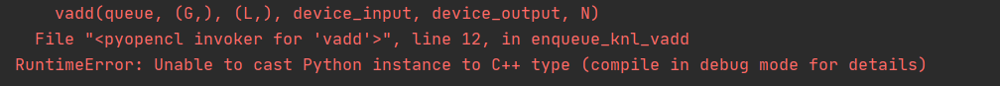

Jel nasao itko nacin kako da u trecem zadatku natjeramo hosta i device da rade na istom komadu memorije? Moj algoritam trenutno u svakoj iteraciji prepise buffer na device, device izvrti kernel i onda procita iz buffera rezultat. To zahtjeva puno vremena i na kraju mi paralelno rjesenje radi sporije nego slijedno 😑
pyopencl._cl.LogicError: clGetPlatformIDs failed: PLATFORM_NOT_FOUND_KHR
zna li netko ovo fixat? ne znam sto jos trebam osim instalirati pyopencl (pycharm na linuxu)
🤡 Moraš instalirati driver koji će ti podržavati OpenCL - ako hoćeš raditi na (NVIDIA) GPU instaliraj cudu, ili idi putem manjeg otpora i instaliraj drivere za CPU. Za cpu drivere probaj neku od ovih naredbi: Pune upute imaš na https://documen.tician.de/pyopencl/misc.html
indythedog sto je najgore kad sam se prebacio na dedicated grafičku proradilo je samo od sebe ali hvala ti!
indythedog Meni baca ovo ako mi je G razlicit od N, nije mi posebno ovo jasno haha

Reznox Nevermind krivo nes sam cita
Reznox sta ti je krivo bilo
Netko radi na macu? M1 ? Koliko vidim apple vise ni nema supporta za opencl, ne znam uopce koje su mi opcije onda, instalirao preko conde pyopencl + pocl i dobivam -> clGetPlatformIDs failed: PLATFORM_NOT_FOUND_KHR
DnkCkv ja sam se s Mac-a prebacio na drugi komp. Isti kod mi radi sad koji na Mac-u nije, iz nekog ralozga kad bi mu dao n brojeva, majstor je rjesavo samo prva 3-4 broja…
DnkCkv ako imas neki non Mac komp, preporucam
Kako ste implementirali da jedna dretva obradi vise brojeva?
Zna li netko zašto baca ovaj error kad pokušam pip install pyopencl?
ako je netko radio s OpenCL wrapper-om koji je na materijalima, kako ste postavljali parametre G i L u zadatcima? u kernel konstruktorima samo nasao samo get_global i get_local, ali ne mogu naci set 😅
Ekipa koja je u Py radila ovaj labos, 3. zadatak. Ste samo portali sve u python i paralelizirali jacobijan jer ne vidim nista drugo posebno sto bi trebalo ili?
Reznox Ja sam paralelizirao jacobian, onu metodu deltasq za izračun pogreške i ovo
Tj. ovo zadnje još nisam, iz nekog razloga mi ne radi dobro
indythedog Jeli mi onda moramo pretipkat ovaj cpp kod u python samo da bi paralelizirali neke dijelove?
indythedog Jesi li uspio popraviti? Meni isto daje krive vr
Bisolvon To sam ja napravio da, al kao ne treba ti dugo, meni je trebalo nekih 15ak min
wLkR-74159 zna li itko ovo? BTW ovaj drugi link za intel system studio (ili kako se vec zove) - nisam uspio pokrenuti
Za sve koji se muce s konfiguracijom na Macbook-u, ja sam pratio ovaj guide za Macbook s M1 cipom: https://wiki.tiker.net/PyOpenCL/Installation/Mac/ Vrlo jednosavno, 2min posla, cini mi se da sve normalno radi (probao sam par primjera s interneta, jos nisam rjesio vjezbu). Toplo preporucam svima
jel imao netko ovu grešku kod importanja pyopencl? ImportError: DLL load failed while importing _cl: The specified procedure could not be found.
ImportError: DLL load failed while importing _cl: The specified procedure could not be found.
treci zadatak, imam problem kod slanja parametara u kernel, iz nekog razloga mi se prenese neko smece umjesto pravih brojeva. ovo dobijem kad ispisem m, n, bnorm, checkErr, tolerance.
ima neko ideju do cega je?
SuperSjajan3 moguce da je do data typeova, probaj se malo poigrat s tim